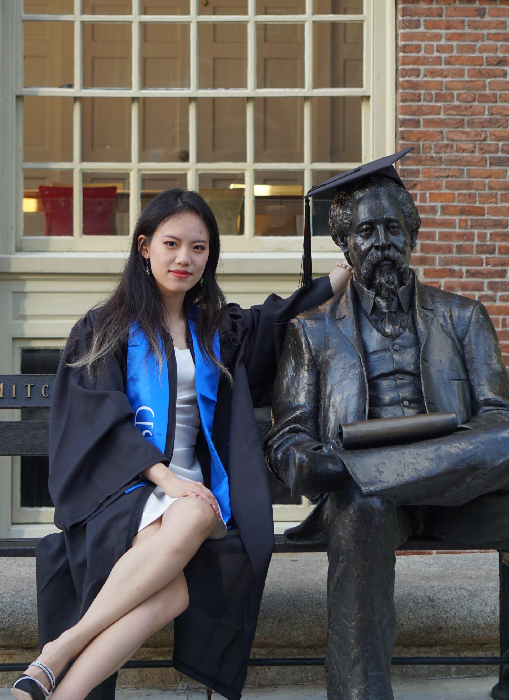
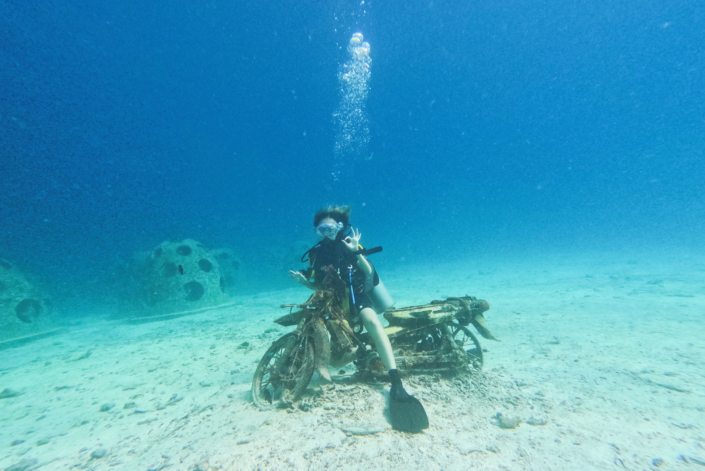
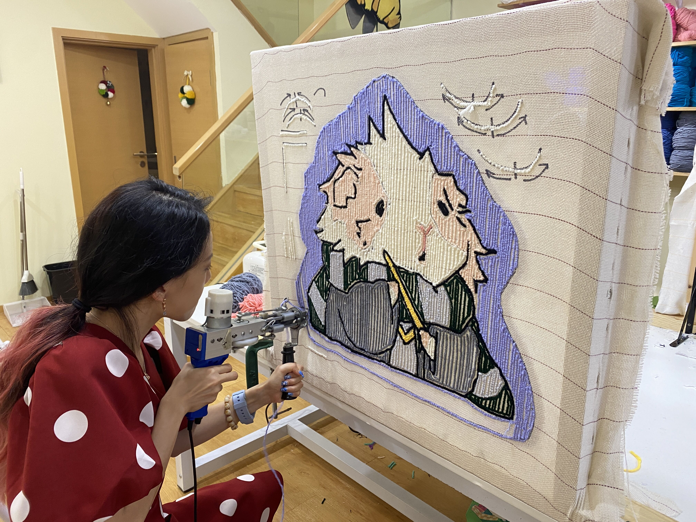

Areas of Expertise
#UX Design
#Product Strategy
#Design System
#Product Strategy
#Design System


Want to know more about me?
Scroll down to see my career life!
Scroll down to see my career life!

Xinyu Guo is a full-stack product designer based in Seattle, WA.
💯 I am an international student from 🏡Nanjing, China, and currently enroll in 🧙University of Washington for MS in Human Centered Design & Engineering. I will graduate at June, 2026.
🎨 As a designer, I care deeply about how technology can be translated into a more humanistic language, and how we can better democratize design, creation, and collaboration through creative software.
🧩 Combining my education in art and engineering, I am specialized in Design System, Data Vis, AI Solutions and Vibe Coding for large-scaled, complex systems.
👁️ Moreover, my background in robotics and ⌨️CS also extends to front-end development and AI. I have experience in the conceptual design of intelligent hardware and multi-modal interaction projects. One of my design "ArthoGlove - Hand Pain Simulation" has won 2nd Prize of 2024 China-US Young Maker Competition.
🗺️ Aside from work, I love exploring 🏖️⛵🐠extreme sports, Art Toys, and metaverse in whatever ways I can.







The Story of how I Become a User Experience Designer